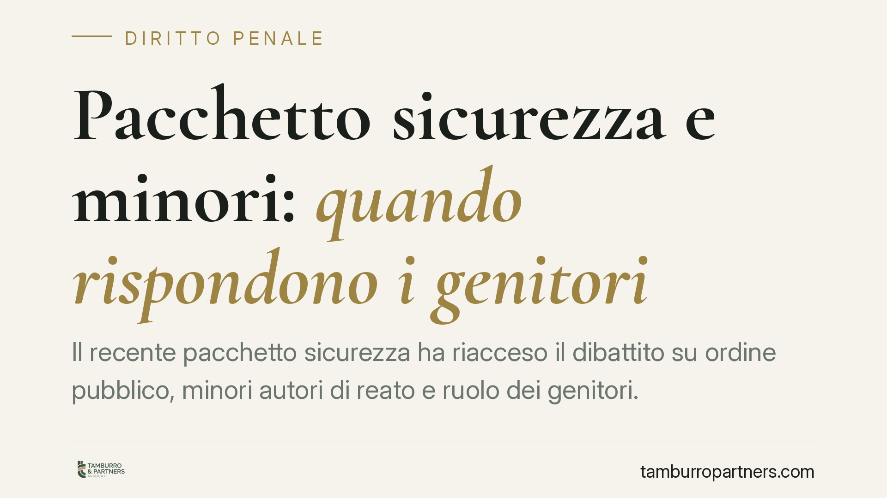

Pacchetto sicurezza e minori: quando rispondono i genitori
Il recente pacchetto sicurezza ha riacceso il dibattito su ordine pubblico, minori autori di reato e ruolo dei genitori. Tra nuove fattispecie penali, misure sulla flagranza e profili di responsabilità familiare, è utile distinguere ciò che è diritto vigente da ciò che è ancora in evoluzione, evitando conclusioni affrettate su un testo dai contorni mobili.

Il contesto
Il cosiddetto pacchetto sicurezza 2024-2025 ha avuto un iter articolato, passato da disegno di legge a provvedimento d'urgenza e poi a conversione parlamentare. Per questa ragione la numerazione circolata nel dibattito pubblico (il "sesto decreto sicurezza") non va assunta come dato certo: gli estremi esatti vanno verificati sulla Gazzetta Ufficiale prima di fondarvi qualsiasi valutazione.
Il tema che più interessa le famiglie riguarda il trattamento dei minori autori di condotte illecite e i riflessi sui genitori. Qui la prudenza è doppiamente necessaria, perché si intrecciano norme consolidate e proposte ancora in assestamento.
Inquadramento normativo
Sul fronte penale, il pacchetto interverrebbe introducendo o inasprendo fattispecie legate alle manifestazioni e all'ordine pubblico. Precisazione doverosa: non è corretto collocare la nuova figura di reato all'art. 420-bis c.p., che disciplina altra materia. Chi intende citare la norma deve indicare il numero esatto dell'articolo effettivamente introdotto o novellato dal provvedimento, come riportato in Gazzetta Ufficiale. In assenza di questa verifica, è preferibile parlare genericamente di "nuova fattispecie introdotta dal provvedimento".
Sull'imputabilità del minore, occorre sgombrare il campo da un equivoco diffuso. Il diritto vigente non conosce alcuna "presunzione di imputabilità" per la fascia 14-18 anni. L'art. 98 c.p. stabilisce che il minore degli anni diciotto, ma che abbia compiuto i quattordici, risponde penalmente solo se, nel caso concreto, aveva capacità di intendere e di volere. Si tratta di un accertamento da compiere volta per volta, non di un automatismo. Eventuali modifiche in senso restrittivo di questo impianto andrebbero lette al condizionale, come proposte da verificare sul testo definitivo, e non come diritto già acquisito.
Quanto ai genitori, il riferimento cardine resta l'art. 2048 c.c., che prevede la responsabilità civile di padre e madre per il danno cagionato dal fatto illecito del figlio minore con loro convivente. È una responsabilità per fatto altrui, superabile solo provando di non aver potuto impedire il fatto: la cosiddetta prova liberatoria. Il provvedimento potrebbe affiancare a questo profilo civilistico ulteriori conseguenze di natura amministrativa a carico dei genitori di minori non imputabili, ma anche su questo punto è prudente attendere il testo coordinato.
Implicazioni pratiche
Per la famiglia tipo, il messaggio è che il coinvolgimento del minore in condotte rilevanti non esaurisce i propri effetti sulla sola posizione del ragazzo. Dal lato civile, l'art. 2048 c.c. espone già oggi i genitori al risarcimento dei danni, salvo la prova liberatoria. Dal lato penale, l'eventuale procedimento a carico del minore ultraquattordicenne richiede sempre la verifica in concreto della sua maturità.
Per chi partecipa a manifestazioni, le nuove regole su flagranza e arresto, se confermate, potrebbero ampliare i margini di intervento delle forze dell'ordine anche a distanza di tempo dal fatto. Anche in questo caso, misura e presupposti vanno letti sul testo effettivo.
Cosa fare in concreto
- Verificate sempre gli estremi esatti del provvedimento (numero, anno, articoli) sulla Gazzetta Ufficiale prima di assumere decisioni: il dibattito mediatico non è una fonte normativa.
- Se un minore convivente è coinvolto in un procedimento, attivatevi subito per la nomina di un difensore e per la ricostruzione puntuale dei fatti.
- In ottica di art. 2048 c.c., conservate ogni elemento utile a documentare la vigilanza e l'educazione esercitate: possono rilevare ai fini della prova liberatoria.
- Distinguete il piano penale (che riguarda il minore) da quello civile e amministrativo (che può coinvolgere i genitori): sono binari autonomi, con regole proprie.
- In caso di dubbio su norme ancora in evoluzione, consigliamo di non agire sulla base di sintesi giornalistiche ma di un riscontro sul testo in vigore.
Una valutazione prudente
Le novità in materia di sicurezza vanno esaminate caso per caso, sul testo definitivo e alla luce dei principi costituzionali. Alcuni profili, in particolare quelli che toccano l'imputabilità del minore e la responsabilità dei genitori, sono destinati con ogni probabilità a un vaglio di legittimità costituzionale. Fino ad allora, ogni affermazione categorica è prematura.
*Contributo informativo a cura di Tamburro & Partners - Avv. Giuseppe Tamburro. Non costituisce parere legale.*
Ogni condominio ha una storia a sé.
Se gestisci un'amministrazione e vuoi un confronto su una specifica questione condominiale, scrivi allo studio. Ti rispondiamo entro un giorno lavorativo.